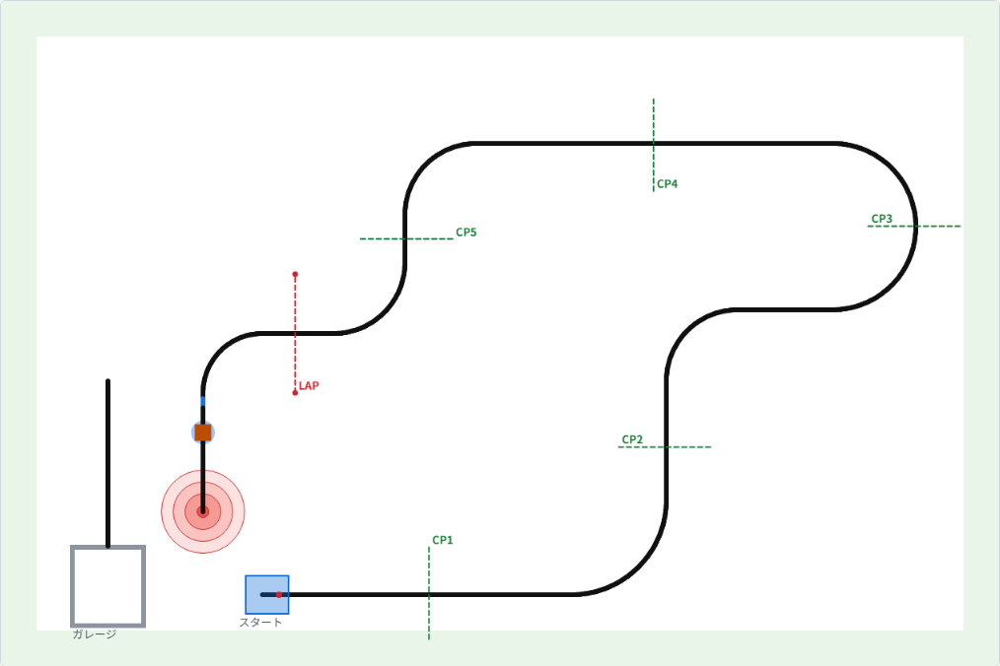

第7回 シミュレータ（2）ブロックを運んでガレージで止まる
前回のライントレースに状態機械を足して、LAPのあとのブロック運びとガレージ停止までを作ります。2〜3時間かかると思います。
用意するもの：前回の PD制御の my_robot.c、ドリル問題10の状態機械
説明
LAPのあとのコース

LAPを過ぎると線は南に曲がって、線の上に茶色のキャリーブロックが置いてあります。その少し手前の線が青くなっていて、これが目印です。線はそのまま南へ続いて、赤い円（ランディングサークル）の真ん中で終わっています。ブロックの最初の位置から円の中心までは334mmです。
ブロックを置いたらガレージへ向かいます。ランディングサークルの400mm西に、南北に走る別の線があって、その南の端がガレージの入口です。ガレージの中で競技終了（command->finished = true）を知らせると10点です。
状態で動きを変える
ここから先は、「今どの区間にいるか」で動きが変わります。線をたどる、ゆっくりたどる、ブロックに近づく、押す、下がる、回る、別の線を探す……。第5回でやった状態機械で書きます。
typedef enum { STATE_TRACE, STATE_SLOW, STATE_APPROACH, STATE_PUSH, ... } State;
static State state = STATE_TRACE;
void robot_step(const Sensor *s, Command *c)
{
switch (state) {
case STATE_TRACE:
line_trace(s, 90, c);
if (distance_mm(s) >= 7250) {
state = STATE_SLOW;
robot_log("LAPを過ぎた");
}
break;
...
}
}状態を変えたときに robot_log() で一言書いておくと、再生画面の右に時刻と一緒に出るので、あとで追いやすくなります。
進んだ距離
区間の切り替えには、スタートや状態に入ったときから進んだ距離をよく使います。車輪の角度から出せます（ドリル問題1の逆です）。
static float distance_mm(const Sensor *s)
{
float deg = (s->left_deg + s->right_deg) / 2.0f;
return deg * 3.14159265f / 180.0f * WHEEL_RADIUS_MM;
}状態に入ったときの距離を覚えておいて、今の距離との差を見れば、その状態で何mm進んだかが分かります。回った角度も同じように、状態に入ったときの gyro_deg との差で測ります。
なぜLAPのあとに遅くするのか
超音波センサは正面しか見えません。カーブの途中にあるブロックには、ぶつかる直前まで気づけません。速いままカーブを抜けると、ブロックに突っ込んで線から外れてしまいます。だから、LAPを過ぎたら（スタートからおよそ7200mm）まず速さを落としておきます。これは答えの例を作っているときに、実際に100回中2回やってしまったことです。
手順
- 前回の
my_robot.cに、状態のenumとswitchを足す。最初は「ライントレース」と「ゆっくりたどる」の2つだけにして、LAPのあとで遅くなるのを再生で確かめる - 「近づく」「押す」を足す。334mm押したら止まるようにして、ランディングの点を見る
- 「下がる」から先を1つずつ足していく。1つ足すたびに走らせて再生で確かめる
- 最後に seed 1〜10 で全部ガレージに入るか確かめる
一度に全部書いてから走らせると、どこがおかしいのか分からなくなります。1つ足したら1回走らせる、を守ってください。
演習
演習7-1 ブロックを運ぶ
LAP を過ぎたら遅くし、ブロックが300mmより近くに見えたらさらに遅くして、当たったら（sonar_mm がほぼ0）そこから334mm押して止まるようにしてください。ランディングターゲットの20点になれば成功です。
中円や大円になったときは、再生を見て、どこで何mmずれたか確かめてください。
演習7-2 ガレージで止まる
ブロックを置いたら、ガレージへの線に乗り換えてガレージで止まるようにしてください。たとえば次の流れです。
- 200mm下がる
- その場で右に90度回る（ジャイロで測る）
- まっすぐ西へ進み、黒い線を見つけたら少し進んで線に乗る
- 左に90度回る
- 線をたどって南へ行き、線が切れたら少し進んで止まり、競技終了を知らせる
うまくいかないとき
回りすぎる：止めてもすぐには止まらないので、回る出力を下げるか、少し手前で止める。 線を通り越す：西へ進むときに向きが少しずれていると、ガレージへの線の上の端を通り越す。ジャイロで向きを保ちながら進む（向きのずれに比例して左右の出力を変える）。 逆に曲がっていく：乗り換えた直後は、センサが線のどちら側にいるかで、たどる向きが逆になる。左の縁をたどるなら、南を向いたときにセンサが線の東側にいる必要がある。 すぐに線を見つけたことになる：回り始める場所は本線の上なので、動き出してすぐに見える黒は本線。少し進むまでは無視する。 斜めにガレージに入る：線が切れた所ではもう曲がり始めているので、入るときはジャイロで南に向け直す。演習7-3 どの seed でも
seed 1〜10 で全部ガレージに入るようにしてください。入らない seed があったら、その seed の再生を見て、どの状態で何が起きたか書き出してから直します。
答えの例は mingw32-make answer で走らせられます（answer/my_robot.c、seed 0〜99 の100回すべてでガレージまで入る）。自分でやってから見てください。
次回までに
自分の my_robot.c の状態を、enum の順に書き出しておいてください。次回はそれを状態機械図にします。